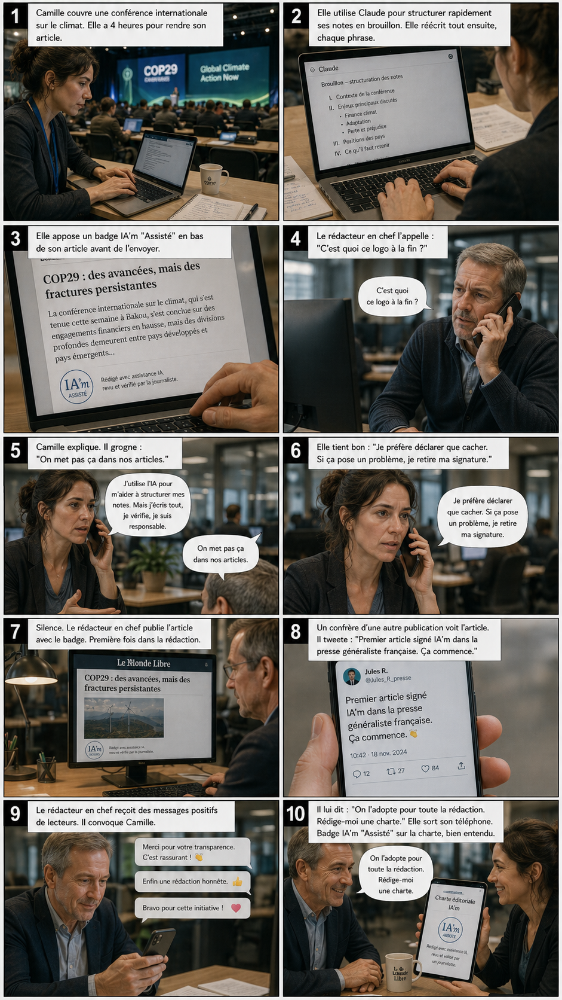
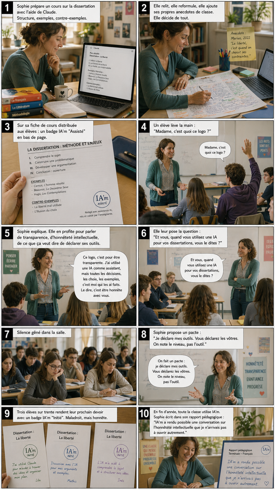
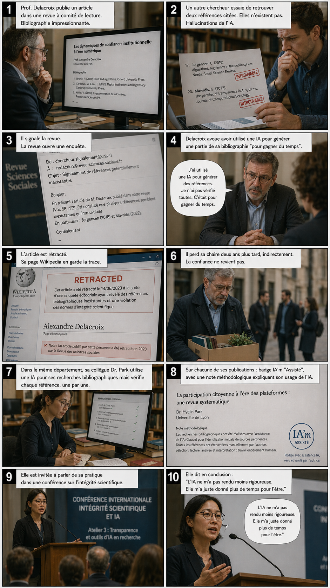
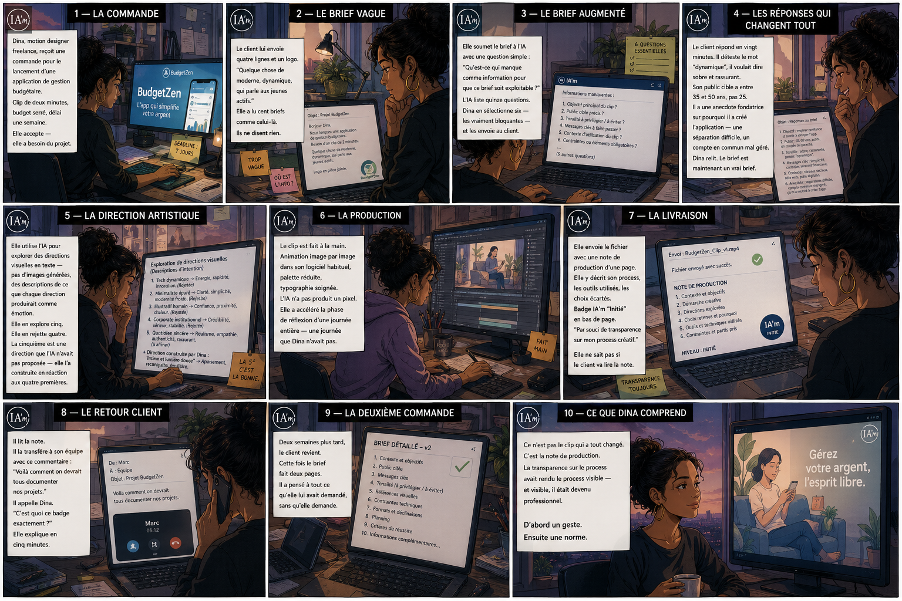
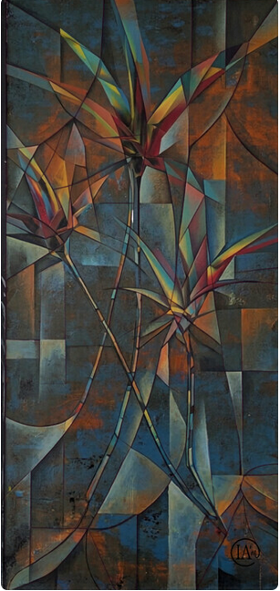
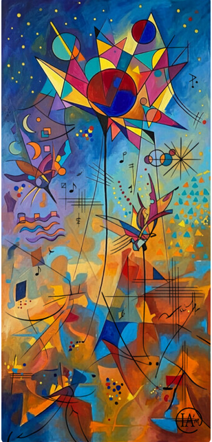

01
Clarté
Le public comprend immédiatement qu'il y a eu co-création ou assistance IA.
IA'm est un badge simple pour déclarer clairement la part de l'intelligence artificielle dans une œuvre, un texte, une image ou un projet. Plus de clarté, moins d'ambiguïté.
IA'm est un repère visuel et éthique. Il ne juge pas la qualité d'une œuvre, il signale simplement que l'IA a participé au processus créatif.
Le public comprend immédiatement qu'il y a eu co-création ou assistance IA.
Le créateur assume son usage de l'IA sans cacher le processus.
Le badge reste simple à utiliser dans des contextes culturels, éducatifs ou professionnels.
IA'm distingue trois niveaux selon un critère unique : qui porte la décision créative ? Le badge n'apparaît que lorsque l'IA intervient — sinon, aucune mention n'est nécessaire.
L'IA appuie, corrige, suggère. Elle reste un outil au service d'une intention humaine clairement formulée.
L'IA propose, l'humain choisit, oriente, retravaille. La création naît d'un véritable dialogue entre les deux.
L'IA produit l'essentiel à partir d'une consigne. L'humain cadre, sélectionne, mais n'intervient pas dans le détail.
Le principe est volontairement direct pour éviter les frictions d'usage.
Tu identifies qui porte la décision créative : toi, le dialogue avec l'IA, ou l'IA elle-même.
Tu crées le badge correspondant et tu le conserves pour cette œuvre, cette page ou cette série.
Tu le poses près de l'œuvre, dans les crédits ou sur la page de présentation.
Tu peux ajouter un court texte pour expliciter le rôle de l'IA dans le processus.
Une sélection courte pour aider à se projeter. Clique sur une image pour l'agrandir, puis clique à nouveau pour zoomer sur les détails.




Des œuvres concrètes signées avec le label, par des créateurs qui assument leur dialogue avec l'IA.


IA'm n'est pas qu'un badge : c'est une réflexion en cours sur la place de l'IA dans la création. Textes, récits, documents — autant de portes d'entrée selon les sensibilités.
Notes, analyses et prises de position sur la transparence, la co-création, et les enjeux de l'attribution à l'ère de l'IA générative.
Un récit illustré qui met en scène les usages et les malentendus de la création assistée par IA. Pédagogique, ironique, accessible.
Pour une question, un partenariat, une amélioration ou un usage du badge, le plus simple est de passer par le contact ou le générateur.